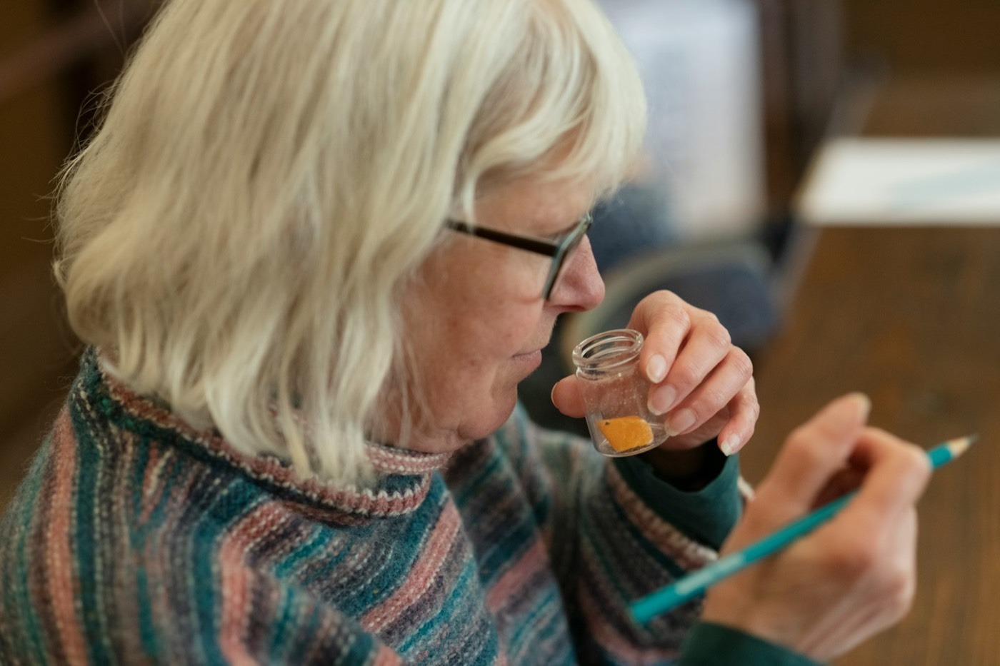
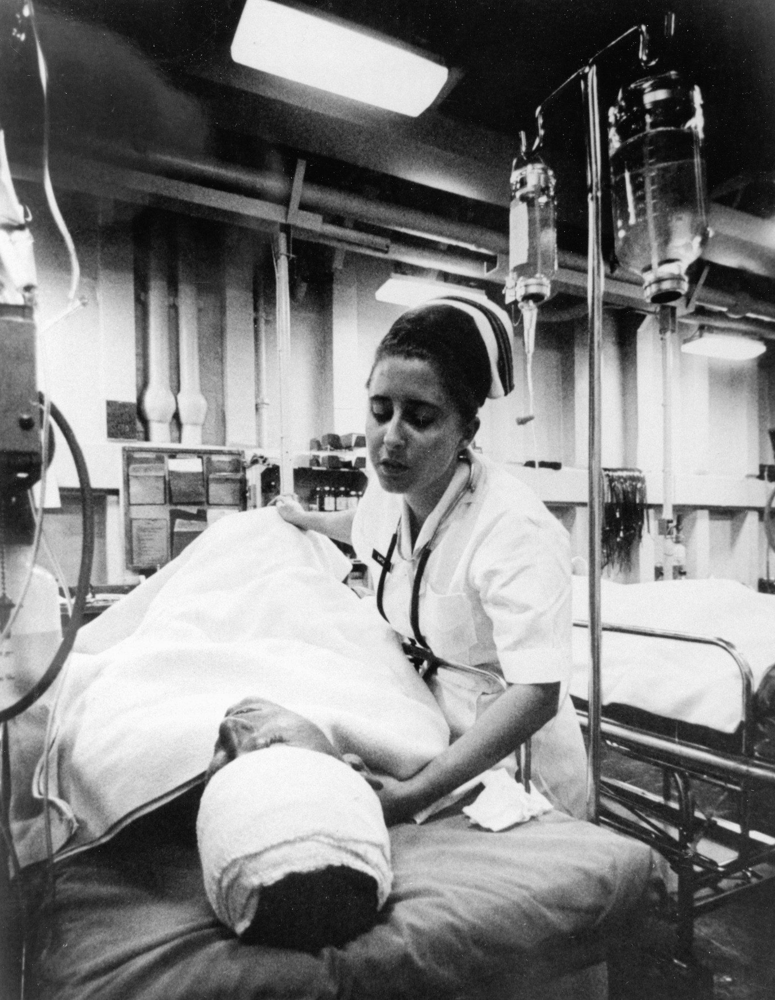
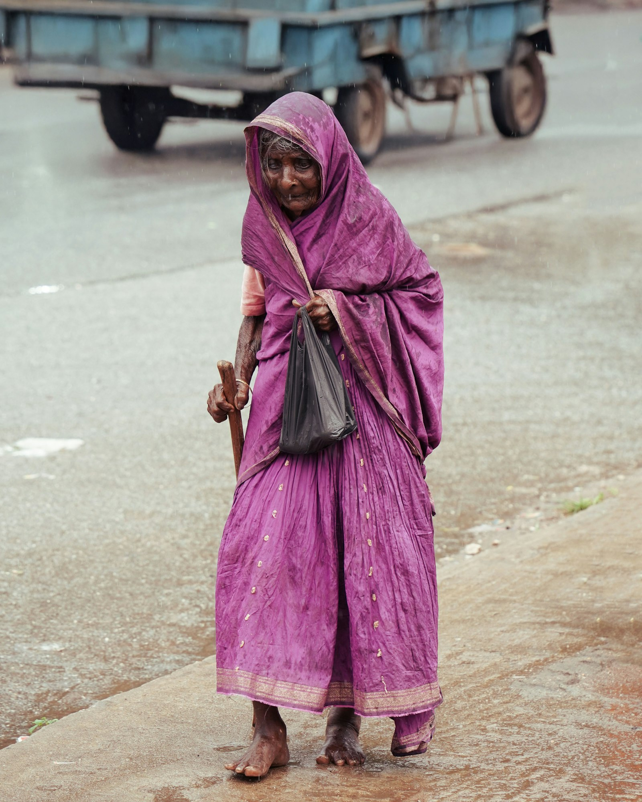
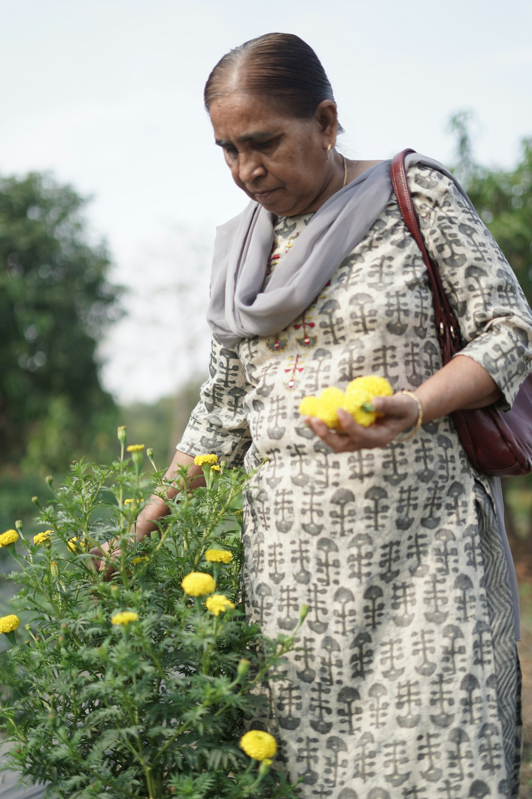

The short answer
People with dementia often eat and drink less because they forget, cannot recognise food, find cutlery hard or do not feel thirst. Small frequent meals, finger foods, high-contrast plates, drinks offered on a schedule and eating together all help.
Why eating gets harder
- Forgetting to eat, or thinking they already have
- Not recognising food on a busy or same-coloured plate
- Trouble with cutlery or chewing; sore teeth or ill-fitting dentures
- Losing the feeling of thirst
- Too much choice or noise at the table
Practical ideas
- Finger foods: sandwiches cut small, cheese cubes, fruit, mini quiches
- A plain plate in a strong color that contrasts with the food
- One course at a time
- Eat together; people copy what they see
- Favourite foods from their past
- Drinks every hour: water, milk, soup, jelly, juicy fruit
- Keep a simple log of meals and drinks

An older woman holding a glass of waterSigns of dehydration to watch for
Dark urine, dry mouth, headaches, more confusion than usual, dizziness and constipation. Dehydration can make dementia symptoms look much worse. Call the doctor if you are worried.
Our caregivers log every meal and every glass in the family app, so the family can see a pattern before it becomes a problem.







Related guides
General information, not medical, legal or financial advice. If someone is in danger, call 911.
Care is a hundred small, good things.
A hand held. A story remembered. A routine that fits them.





Next step
You do not have to work this out alone.
Call (813) 555-0142 and a care advisor will listen first, then tell you plainly what we would do and what it would cost.